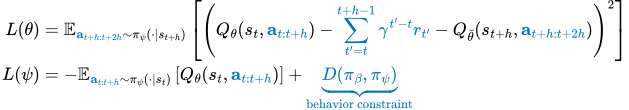

Abstract
We present Q-chunking, a simple yet effective recipe for improving reinforcement learning (RL) algorithms for long-horizon, sparse-reward tasks. Our recipe is designed for the offline-to-online RL setting, where the goal is to leverage an offline prior dataset to maximize the sample-efficiency of online learning. Effective exploration and sample-efficient learning remain central challenges in this setting, as it is not obvious how the offline data should be utilized to acquire a good exploratory policy. Our key insight is that action chunking, a technique popularized in imitation learning where sequences of future actions are predicted rather than a single action at each timestep, can be applied to temporal difference (TD)-based RL methods to mitigate the exploration challenge. Q-chunking adopts action chunking by directly running RL in a 'chunked' action space, enabling the agent to (1) leverage temporally consistent behaviors from offline data for more effective online exploration and (2) use unbiased n-step backups for more stable and efficient TD learning. Our experimental results demonstrate that Q-chunking exhibits strong offline performance and online sample efficiency, outperforming prior best offline-to-online methods on a range of long-horizon, sparse-reward manipulation tasks.
Q-chunking = Action Chunking RL + Behavior Constraint
Our first design principle is to run a standard TD-based actor-critic RL algorithm on action sequences. That is, at every h time steps, the actor predicts a sequence of h actions and then execute them one-by-one in sequence. Both the critic and the actor are also trained via a standard TD loss but on this temporally extended action space. This allows us to perform unbiased n-step return backups, improving value learning stability and efficiency. Our second design principle is to impose a good behavior constraint on the temporally extended action sequence. Intuitively, this allows us to leverage temporally coherent action sequences in the offline dataset. This is particularly advantageous in the temporally extended action space compared to in the original action space because offline prior data (especially in the real world) may often exhibit non-Markovian structure that cannot be well captured by a Markovian behavior constraint. As a result, our policy is able to generate temporally coherent actions for more effective online exploration.
Standard TD-based RL

Q-chunking
A Practical Q-chunking Algorithm: QC
We instantiate this idea as QC, a simple and effective offline-to-online RL algorithm. We first train an expressive behavior cloning flow policy. Then, we implicitly represent a policy using samples from this behavior policy. In particular, we use Best-of-N (BFN) sampling where we sample N actions and select the one that maximizes the Q function. This is for both selecting actions during online exploration and TD backup. QC can be summarized within only two lines:
Online exploration
TD backup
Best-of-N sampling is not a new idea in RL and has been previously explored in many prior works with different implementation details (e.g., EMaQ (Ghasemipour et al., 2020), SfBC (Chen et al., 2022) and DAC (Fang et al., 2025)). However, using this idea in the context of online RL and action chunking is still under-explored. We found that this incredibly simple implicit policy parameterization is quite effective at enforcing a behavior constraint while maximizing the value for an action chunking policy (see results below).
Results
The design principles of (1) running RL with action chunking, and (2) imposing a behavior constraint on the 'chunked' actions is a general recipe that synerize with existing offline-to-online RL algorithms very well because most of them are already eqiupped with a behavior constraint! This allows us to develop QC-FQL, another effective offline-to-online RL method that builds directly on top of FQL (Park et al., 2025). As what we will show below, QC-FQL also achieves significant improvements over FQL. BFN-n and FQL-n are n-step return baselines for QC and QC-FQL respectively.
BibTeX
@article{li2025qc,
author = {Qiyang Li and Zhiyuan Zhou and Sergey Levine},
title = {Sample-Efficient Reinforcement Learning with Action Chunking},
conference = {arXiv Pre-print},
year = {2025},
url = {http://arxiv.org/abs/2507.07969},
}